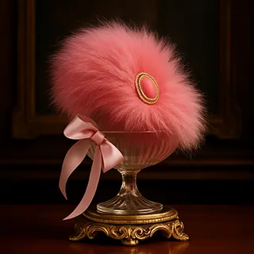

🎀 Nimbo Macaron de Antonieta
Clasificación: Pelusa de Ombligo Real – Edición Corte de Versalles.
Origen: Según el Barón, habría surgido del corsé de María Antonieta durante un baile interminable en los salones de Versalles, entre encajes, polvo de arroz y abanicos que no dejaban de agitar secretos.
Descripción del Barón: La curva elegante de esta pelusa imita la silueta de una caricia entre encajes, y su rosa azucarado recuerda a un macaron servido en vajilla de porcelana. La joya que porta no es un simple adorno: parece un antiguo broche de familia, custodio silencioso de confidencias, promesas y decisiones susurradas al abrigo de la corte.
Nota Aromática: Mezcla de polvo de arroz perfumado, azúcar quemada, flores blancas de jardín y un eco lejano de champagne derramado sobre un bordado que nadie se atrevió a limpiar del todo.